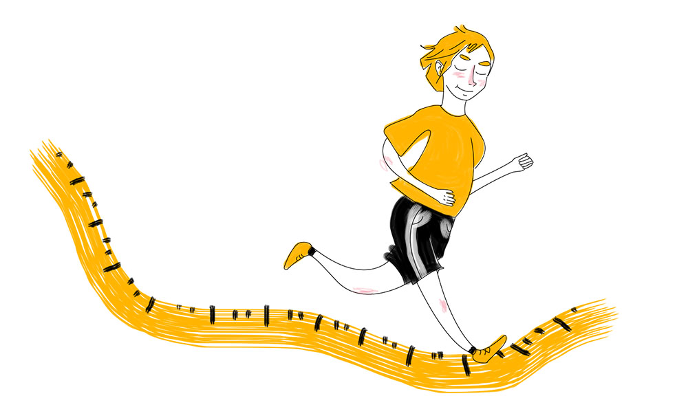

MY ROAD TO LIFE
Today’s society wants everybody to be happy with who they are, but what if we are not?
Weight is a sensitive subject to a lot of people. Did you get bullied in school because of it? Do you get disgusted looks while you’re walking or eating outside? Looking into the mirror and not liking what you see? I did. I was never happy about myself and it made me really depressed.
It’s early 2016, I kept getting sick over and over again. I was going to the doctor repeatedly and hearing the same phrase, “we don’t know what is wrong, so I’m going to reserve a time for a specialist for you.” I was getting really behind in school, because of the constant fever and stomach pains. Finally, in May, I met a specialist of a specialist of a specialist at Tampere University Hospital in Tampere. He basically said to me, “You need to lose weight and that is the ONLY way to make this better.” I have been obese my whole life and tried to lose weight many times without any success. I did it for few months, then went back to my old habits of eating a 235g bag of chips 3 to 5 times a week, pizza and lots of pasta dishes that had a lot of calories. After the doctor’s appointment, he suggested that I walk 7 kilo- meters a day at least 5 times a week. I was able to do it for two weeks and then I begun to have knee pains, which was excruciating. I truly felt like I was not meant to lose weight and I would stay obese my whole life. This made me the most depressed I’ve ever been in my whole life. Even though it’s a bit harsh, I didn’t really care if I lived or not. That was what I felt. I absolutely hated how I looked. If someone wanted a picture of me, I was out from the room in 2 seconds. So, there was a long period where there were no pictures of me, unless someone took them without me knowing. Fast forward to November 2016. It might sound a bit cheesy, but I felt like my life was turned around. I met a girl. It really made me think of what I really want from my life, what I want to become, and what I want to look forward to. I just didn’t know how to go forward with losing weight. Luckily, my good friend from my childhood gave me some tips on what I should try. Still, I didn’t act right away, even though having the ‘I can do this’ mindset. On my birthday, 31st of December 2016, I woke up and went to the scale, seeing 150,9kg. I felt shocked, because it is the highest I’ve ever been. “Now this has to change! From tomorrow on, I will start walking every morning!”.
“It really made me think of what I really want from my life, what I want to become, and what I want to look forward to.”
And so I did. I also asked my friend to make me a gym program that I could try to do twice a week. I have tried going to the gym before, but it usually didn’t last long. Therefore, I wanted to do it only twice a week. On the 1st of January 2017, I woke up, dressed myself and went for a walk. Last time I did it, I ended up hurting my knee, because of my weight. Now, I only did shorter walks (3 to 4 kilometers). One of my friends also started losing weight at the same time, so we started having walking challenges, where we wanted to see who got to 100 kilometers first and so forth. Also, I didn’t want to change my diet completely to greens and such, just half the meals I used to.
Everyday I went for a walk. I would put some good, chill music on and just go. It made me really enjoy life. In the gym I felt like I had improved a lot and had gained a lot of strength, which amazed me. I really got into working out at the gym and because of it I started watching videos from YouTube of people who had lost great amounts of weight and are still keeping it up. That helped me to keep up the motivation and also gave me more insight of what kind of mindset I should have to be able to keep up with it. At the same time, I really started getting into more of the bodybuilding side of gym workout. So, I asked my friend if he could design me a new workout program, which he did. And I’m still using it till this day. I believe, I’ve gained around 10 kilos of muscle since then. Every time I go to the gym, I enjoy every second of it. It is one of my favorite things. I’ve had my falling points, which almost made me lose faith, but I keep fighting. Last November, I broke and kept eating junk food so much that I gained back 7 kilos. I was total a wreck when I noticed what had happened. But I pulled through and was able to lose it and more. Now that I’ve been doing this for over a year, I’ve learned a lot from this experience. I’ve lost 58 kilos in total now and my goal is to lose 12 kilos more, even though the doctor told me that I might be able to lose from 5-10 kilos and then it might stop, because the muscles and excess skin that I have. I’m still young so I don’t worry too much about the skin. It will take time, but it should tighten up.
Today I keep track of what I eat, when I eat and how much I eat, but I don’t let myself be to strict of what I eat. Sometimes I eat whatever I like, as long as it ts in my daily calories. My goal now is to get as close to 80 kilos as I can before September. It is the goal I set for myself last year. I will focus more on bodybuilding this summer and try to gain more muscle. But I will keep going strong, since I’ve gotten this far already. I’m really happy where I am now, and I couldn’t do this alone. I want to thank everyone who has supported me on this road and who keep me going day by day. As they say, “No pain, no gain”.
“Everyday I went for a walk. I would put some good, chill music on and just go. It made me really enjoy life.”
We can do whatever we want to if we set our mind into it. To this day, I’m keep amazing myself of what I have done and achieved so far. It hasn’t been an easy road, but in fact the hardest task I’ve ever put myself through. Now that I think of it, all it needed was a small spark that will light the road. I have many close friends who want to lose weight but say they can’t do it. I want to be that spark to them. I always say, “If I can do it, so can you.” So, everyone who is trying to lose any weight but doesn’t believe they can do it, remember my words.